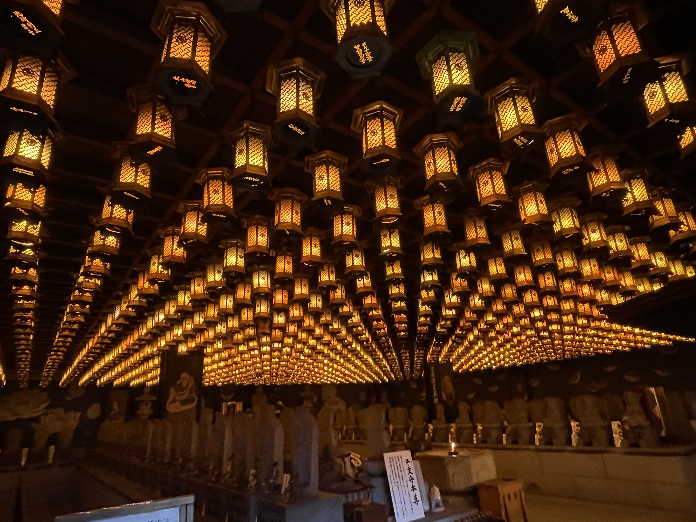

Japan had been on our list for years. The kind of trip you keep saying "next year" to — until one day you just book it. We spent 12 days in November/December 2025 covering four cities: Tokyo, Hiroshima, Kyoto, and Osaka. We tracked every single expense, from the airport limousine bus to the convenience store onigiri at midnight.
This is the guide we wish someone had written for us. Not the sanitised "budget travel" version that assumes you'll sleep in a capsule hotel and eat vending machine food. The real version — two people, decent hotels, great meals, a few splurges, and the occasional "wait, how much was that knife again?"
Total trip cost for two: $8,839 USD including flights. Everything below is the breakdown.
"Japan rewards the curious. Every alley has a story. Every meal is an event. Every train arrives exactly on time."
The Route: 4 Cities, 12 Days 🗾
We flew into Narita (NRT) and out of Haneda (HND) — an open-jaw routing that kept us from doubling back. The Shinkansen did the heavy lifting between cities, and it was worth every yen.
- Days 1–5: Tokyo (ibis Styles Ginza East)
- Days 6–7: Hiroshima (Royal Park Hotel Riverside)
- Days 8–10: Kyoto including a day trip to Nara (Miyako Hotel Hachijo)
- Day 11: Osaka day trip before heading to Haneda
- Day 12: Fly home from Haneda
One thing we'd tell anyone: book the Shinkansen in advance via Smart EX. You can reserve seats, change bookings, and avoid the ticket office queue entirely. It saved us serious stress on travel days.
Tokyo: 5 Nights · $1,992 Total 🏙️
Tokyo is enormous and overwhelming in the best possible way. Five nights felt just right — enough to go deep without burning out. We stayed in Ginza East, which put us within walking distance of Tsukiji and easy metro access everywhere else.
What we did: Senso-ji Temple and Nakamise Shopping Street in Asakusa, Tokyo Skytree (the views from the top are genuinely jaw-dropping), Kappabashi Kitchenware Street (the best souvenir stop in Tokyo — we bought a Tojiro knife that already lives in our kitchen), Meiji Jingu and Yoyogi Park, Shibuya Crossing and Shibuya Sky rooftop, and a day trip to Chureito Pagoda which deserves its own section below.
What we spent: Food came to $230, sightseeing $65, hotel $707 for five nights, plus $836 in shopping (everything from Uniqlo to Don Quijote to Onitsuka Tiger). Tokyo is where the shopping budget goes to die — in the best possible way.
🎒 Travel Essential
Japan Station Stamp Book
Every major train station, shrine, and tourist spot in Japan has a free stamp (ekiben). This dedicated travel journal keeps them all in one beautiful keepsake — one of the best free souvenirs in Japan that most visitors don't know about.
Shop on Amazon →Affiliate link — we may earn a small commission at no cost to you.
Food tip: Don't overlook the basement food halls (depachika) of department stores like Mitsukoshi in Ginza — exceptional prepared foods, pastries, and bento at every price point. Also: convenience store food in Japan is genuinely good. Don't skip it.
The Chureito Pagoda: Go Only If the Sky Is Clear ⛅

This is the photo you've seen a thousand times — the five-storey red pagoda with Mount Fuji rising perfectly behind it. The reality is even better than the pictures. But there's one thing nobody tells you clearly enough: this shot is entirely at the mercy of the weather.
"Don't plan Chureito Pagoda as a fixed day on your itinerary. Watch the forecast obsessively and go on the clearest day you have."
Fuji is cloud-covered more often than not, especially in shoulder seasons. We got lucky — crystal clear skies, snow-capped summit, the whole picture. But we'd spoken to people at our hotel who made the trip on an overcast day and saw nothing but grey. The hike up (about 400 steps) is worth it regardless, but the view that takes your breath away only happens when the sky cooperates.
Our advice: Keep this as a flexible day in your Tokyo itinerary rather than booking it on a specific date. Check the Japan Meteorological Agency's Fuji visibility forecast the morning you're considering going. If it says clear — drop everything and go. The trains from Shinjuku to Otsuki and then the Fujikyu line to Shimoyoshida take about 90 minutes each way and cost around ¥3,350 each direction.
Getting there early also helps — cloud cover tends to build through the afternoon. We arrived around 10am and had the clearest views of the day.
Hiroshima: 2 Nights · $918 Total 🕊️
Hiroshima surprised us. We expected it to feel heavy — and the Peace Park and Atomic Bomb Museum are genuinely profound and not easy — but the city itself is lively, warm, and full of excellent food. It's also the gateway to Miyajima Island, which is one of the most beautiful places we've ever been.
What we did: Peace Memorial Park, the Atomic Bomb Dome, and the Peace Museum (budget at least two hours; the audio tour at ¥1,200 each is excellent and adds enormous context). Then a full day on Miyajima Island.
What we spent: Food $106, sightseeing $41, hotel $352 for two nights. The big line item here is the Shinkansen — $411, which reflects the Tokyo-to-Hiroshima leg of the journey. Worth every penny; the NOZOMI gets you there in under four hours in total comfort.
Miyajima Island: The Hidden Gem Is Daishoin Temple 🏮

Everyone goes to Miyajima for the floating torii gate of Itsukushima Shrine — and yes, it's spectacular. But the place that genuinely stopped us in our tracks was Daishoin Temple, a 15-minute walk up the hill from the ferry terminal that most visitors walk straight past.
Daishoin is one of the most important Buddhist temples in western Japan, founded over 1,200 years ago. While Itsukushima gets all the attention, Daishoin has something that's almost impossible to describe until you're standing in it: the main hall's ceiling is covered in hundreds upon hundreds of glowing wooden lanterns, each one individually carved and lit, cascading overhead in concentric rows like a river of golden light.
"We stood under those lanterns for twenty minutes without speaking. It is one of the most beautiful things we have ever seen."
The temple complex also has spinning prayer wheels you can turn as you walk (each turn is said to equal reading the sutras inscribed on them), stone statues wearing hand-knitted hats and bibs left by worshippers, and a sand mandala that monks have worked on for years. Entry is free.
How to get there: Take the 10-minute ferry from Hiroshima (¥200 each way, run by JR so covered by the rail pass). Walk past Itsukushima Shrine and follow the signs up the hill to Daishoin. Allow at least an hour — more if you linger, which you will. We combined it with the ropeway up to Mount Misen for views across the Seto Inland Sea, though note the ropeway costs ¥4,500 return.
Practical note: The deer on Miyajima are famous and genuinely everywhere — they will eat your map, your shopping bag, and given half a chance, your lunch. Keep food sealed and hold onto paper items.
📓 Travel Essential
Moleskine Travel Journal — Large
Japan gives you so much to process — the sensory overload of Dotonbori, the silence of Fushimi Inari at dawn, that first Shinkansen departure. A proper travel journal is the only way to actually hold onto it. We filled ours completely.
Shop on Amazon →Affiliate link — we may earn a small commission at no cost to you.
Kyoto + Nara: 3 Nights · $1,258 Total ⛩️
If Tokyo is Japan turned up to maximum volume, Kyoto is the quiet exhale. We based ourselves at the Miyako Hotel Hachijo, a short walk from Kyoto Station, which made day-tripping to both Nara and Osaka straightforward.
What we did: Arashiyama Bamboo Grove (go before 8am — after that it's a crowd), Kinkaku-ji (the Golden Pavilion is even more surreal in person), Fushimi Inari (we did the full two-hour hike to the summit rather than turning back at the first gate — highly recommended for the silence at the top), Kiyomizu-dera, the Ninenzaka and Sannenzaka stone-paved lanes, Gion District at dusk, and a full day in Nara.
What we spent: Food $194, sightseeing $202 (the highest of any city — Kyoto has entrance fees everywhere, plus we splurged on an ¥11,000 photoshoot in kimono which was absolutely worth it), hotel $621, shopping $42.
Nara highlight: Todai-ji Temple houses the Great Buddha — a 15-metre bronze statue that has to be seen to be believed. The deer in Nara Park are tamer than Miyajima's and you can buy special deer crackers (¥200) to feed them. Kofuku-ji's five-storey pagoda and the Kasuga Taisha lantern-lined path are both worth the walk.
Osaka: 1 Day · $472 Total 🍜
We visited Osaka as a day trip from Kyoto, which works perfectly — the train takes about 15 minutes. Osaka has a completely different energy: louder, messier, more chaotic, obsessed with food. We loved it.
What we did: Shitennoji Temple (Japan's oldest Buddhist temple, often overlooked), Namba Yasaka Shrine with its giant lion-head stage, Dotonbori canal and Ebisu Bridge, Shinsaibashi shopping arcade, and the Umeda Sky Building for sunset views over the city.
What we spent: Food $92 (street food in Dotonbori is exceptional and cheap — try the Dubai chocolate-dipped strawberries and takoyaki), sightseeing $30, shopping $143. The Umeda Sky Building tickets are ¥1,500 and worth it for the floating garden observation deck.
🎒 Travel Essential
The North Face Borealis Sling Bag
Japan involves a lot of walking — easily 20,000+ steps a day in Osaka and Kyoto. A compact sling bag kept our essentials (SUICA card, cash, phone, snacks) accessible without the bulk of a backpack. Perfect for temple-hopping and navigating crowded markets.
Shop on Amazon →Affiliate link — we may earn a small commission at no cost to you.
The Shinkansen Secret That Saves You Money 🚅
Our total train spend across the trip was $706 — which sounds like a lot until you realise we covered Tokyo → Hiroshima → Kyoto → Osaka on the bullet train. Here's what we learned:
We did not buy the Japan Rail Pass, and for our itinerary, that was the right call. The JR Pass is only cost-effective if you're covering very long distances very frequently. For a Tokyo-Hiroshima-Kyoto loop, buying individual tickets via Smart EX worked out cheaper. Do the maths for your specific route before committing to the pass — the savings are not always what the travel blogs suggest.
We also used SUICA cards (rechargeable IC cards that work on virtually every metro, bus, and even convenience store in Japan) from day two onwards. Reload them at any station machine. They make getting around frictionless.
🔌 Travel Essential
EPICKA Universal Travel Adapter (GaN 45W)
Japan uses Type A plugs (same as the US) but voltage is 100V — lower than most countries. This GaN adapter handles it all and doubles as a multi-port USB hub for charging phones, earbuds, and cameras simultaneously. One less thing to think about.
Shop on Amazon →Affiliate link — we may earn a small commission at no cost to you.
🔋 Travel Essential
Anker MagGo Slim Power Bank 10,000mAh
Long days of navigating by phone, shooting photos, and running Google Translate drain battery fast. A slim magnetic power bank that attaches directly to your phone changed everything — no fumbling for a cable at the top of 400 Chureito steps.
Shop on Amazon →Affiliate link — we may earn a small commission at no cost to you.
🔌 Travel Essential
Anker 240W USB-C to USB-C Cable
One cable that charges everything — laptop, phone, power bank — at full speed. We packed a single 1m cable and it handled every device we brought. Japan's convenience stores sell cables in a pinch but they're expensive; bring a good one from home.
Shop on Amazon →Affiliate link — we may earn a small commission at no cost to you.
Full Cost Breakdown: Every Category 💴
Here is everything, broken down across the full 12 days for two people:
- Flights (international return, open-jaw): $3,845
- Hotels (11 nights total): $1,887
- Shopping (USD transactions): $1,069
- Food & drink: $697
- Trains (Shinkansen + local): $706
- Taxis & airport transfers: $299
- Sightseeing & entrance fees: $337
Grand total including flights: ~$8,839 USD for two people. Excluding flights, the in-country spend was approximately $4,994 — roughly $2,500 per person for 12 days, covering excellent hotels, daily restaurant meals, and significant shopping.
Could you do it cheaper? Absolutely. Could you spend more? Without trying very hard. Japan is one of those countries that scales beautifully to whatever budget you bring — the convenience store food alone (7-Eleven, Lawson, FamilyMart) is genuinely excellent and costs almost nothing.
What We'd Do Differently 🔄
We'd add two more nights in Kyoto. Three nights felt rushed. There's enough in Kyoto and its surroundings to fill a week comfortably without repeating yourself.
We'd skip Shibuya Sky. The views are fine, but at ¥2,000 per person it's overpriced compared to the Umeda Sky Building in Osaka (¥1,500, better view, less crowded) or the Tokyo Skytree (the observation deck is genuinely exceptional).
We'd budget more specifically for cash. Japan remains more cash-dependent than most countries — smaller restaurants, shrines, and street vendors often don't accept cards. We withdrew ¥220 USD worth of yen on day one which ran out faster than expected. Budget generously and reload your SUICA frequently.
We'd do Daishoin Temple first on Miyajima, before the torii gate crowds arrive on the morning ferry. The temple is quietest in the first hour after opening.
What We'd Do Exactly the Same 💚
The Shinkansen. The knife from Kappabashi. Every single moment in Daishoin Temple. Waiting for clear skies before going to Chureito. The kimono photoshoot in Kyoto. The two-hour hike to the top of Fushimi Inari. The vending machine coffee on cold mornings.
Japan is the kind of place that gets into you. People talk about wanting to go back before they've even left. We understood that completely by day three.
Planning Your Own Japan Trip? 🗾
Save this article for later — and pin the cost breakdown for easy reference when you're budgeting.
Read More Travel Articles